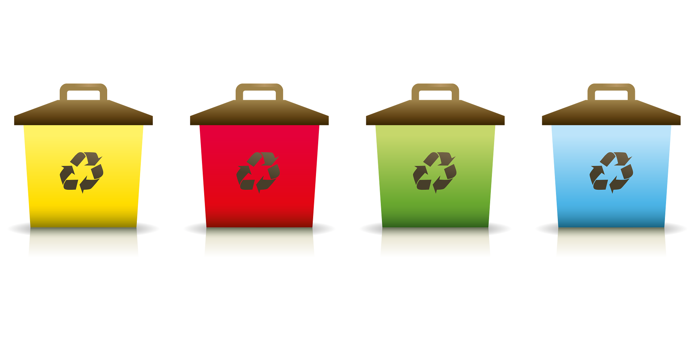

1. Ne vásárolj feleslegesen
Az egész világunk a fogyasztás körül mozog, amelyért hatalmas árat fizetünk. Bár a szüntelen fogyasztás a modern gazdaság fő hajtóereje, a környezetünket visszafordíthatatlanul pusztítja. Éppen ezért fontos, hogy nemet mondj a túlfogyasztásra! Légy tudatos és ne vegyél semmit, amire igazából nincs szükséged! Csak azért ne cserélj le még használható cikkeket, ruhákat és egyéb eszközöket, mert van belőlük szebb, jobb, modernebb! Próbáld elsajátítani a minimalista szemléletet, és csak annyi tárgyat birtokolj, amelyre valóban szükséged van.
2. Gyűjtsd szelektíven a hulladékot
A túlzott fogyasztás közvetlen eredménye a túlzott szeméttermelés. Annak érdekében, hogy minél kevesebb szemetet termelj, figyelj arra, hogy minden, ami újrahasznosítható (papír, műanyag, üveg) a megfelelő tárolóban végezze. Emellett a szelektív hulladékgyűjtéssel jobban megismerheted a szokásaidat is. Láthatod, hogy a mindennapi működésed során milyen fajta hulladékból mennyit termelsz. Ha ezeket a szokásokat megismered és tudatosítod, sokszor már elég lehet ahhoz, hogy elgondolkodj, majd cselekedj annak érdekében, hogy csökkentsd az általad termelt szemét és hulladék mennyiségét.
3. Komposztálj
A konyhai, kerti és bizonyos háztartási hulladékokból értékes, szerves anyagokban gazdag komposztot készíthetsz kültéri vagy beltéri komposztálóval. Ezáltal az otthonodban keletkezett természetes hulladékot komposzt formájában visszaadhatod az anyatermészetnek, csökkented a hulladéktermelésed és kiváló minőségű táptalajt biztosíthatsz a növényeidnek.
4. Ültess fát és növényeket
A klímaváltozás egyik fő oka az erdős területek csökkenése, amelyek szorosan visszavezethetők az emberi tevékenységekre. A fák megkötik a szén-dioxidot a légkörből, szabályozzák a vízciklust és természetes hűsítő hatással is bírnak. Ha teheted, a saját kertedben igyekezz minél több facsemetét nevelni, a kifejlett társaikat pedig megfelelően gondozni. Saját kert híján pedig csatlakozz faültető mozgalmakhoz!